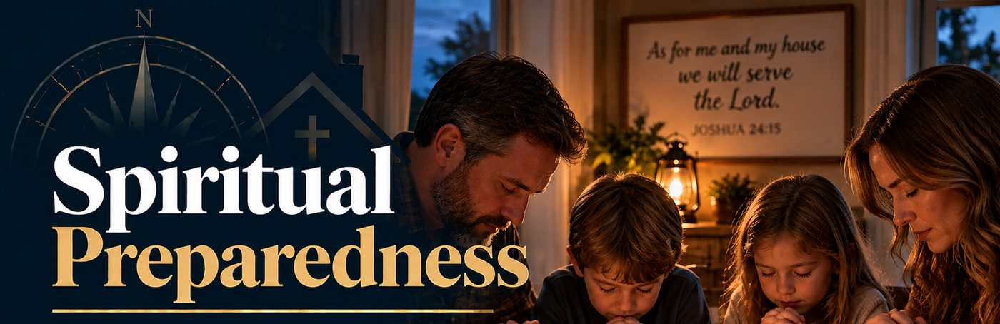

Spiritual preparedness
Readiness starts with the heart. Stay rooted in Christ, in Scripture and in fellowship, and be ready to serve others.
1 Thessalonians 5:6
What this guide covers
Developing a prayer life
Building a daily habit of prayer that holds steady in good times and hard ones.
Studying Scripture
Reading the Bible regularly, and keeping God’s Word close when other things fail.
Spiritual discernment
Testing what we hear against Scripture, and telling truth from fear and speculation.
Biblical perseverance
What the Bible teaches about enduring hardship and remaining faithful.
Christian fellowship
Staying connected to other believers who will pray with you and stand with you.
Helping others during difficult times
Preparing not only for your own household, but to serve neighbors in need.
Trusting God while acting responsibly
Faith and preparation working together, without anxiety or fear.
More is on the way
We’re writing a full guide for each topic above, with practical steps and printable checklists. Preparedness is also a regular topic on Night Watch’s Preparedness Corner.
- Downloadable checklists appear here only once each document exists
- Preparedness content is educational and doesn’t replace guidance from professionals or your local emergency management office